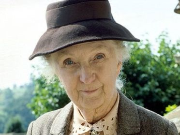
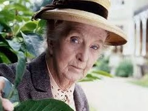
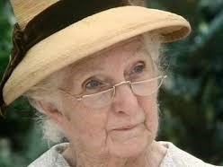
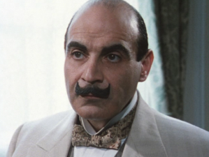
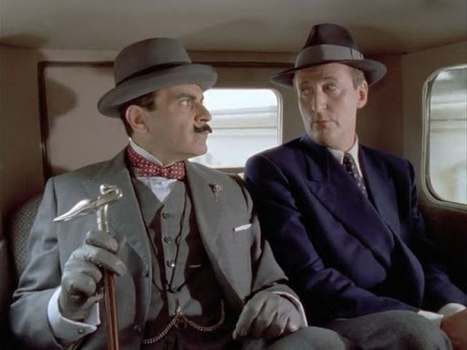

Главные герои произведений Агаты Кристи
- Мисс Марпл



- Мисс Марпл (англ. Miss Marple) — персонаж детективов Агаты Кристи, появившаяся в сборнике рассказов «Тринадцать загадочных случаев» и в 12 её романах. Марпл — старая дева, детектив-любитель, живущая в небольшой английской деревне Сэнт-Мэри-Мид. Наверное, одна из самых любимых героинь Агаты Кристи.
- Эркюль Пуаро

- Эркюль Пуаро (фр. Hercule Poirot) — литературный персонаж известной английской писательницы Агаты Кристи, бельгийский детектив, главный герой 33 романов, 54 рассказов и 1 пьесы, изданных между 1920 и 1975 годами, и поставленных по ним фильмов, телесериалов, театральных и радиопостановок. В настоящее время серию продолжает другая английская писательница, Софи Ханна, которая на 2019 год опубликовала 3 детективных романа об Эркюле Пуаро.
- Капитан Гастингс,

- Капитан Гастингс, неизменный напарник и друг Эркюля Пуаро, отставной военный. Капитан Гастингс появляется во многих произведениях Агаты Кристи (8 романов и множество рассказов), где главное действующее лицо Эркюль Пуаро, включая первое — «Загадочное происшествие в Стайлзе» и последнее — «Занавес».